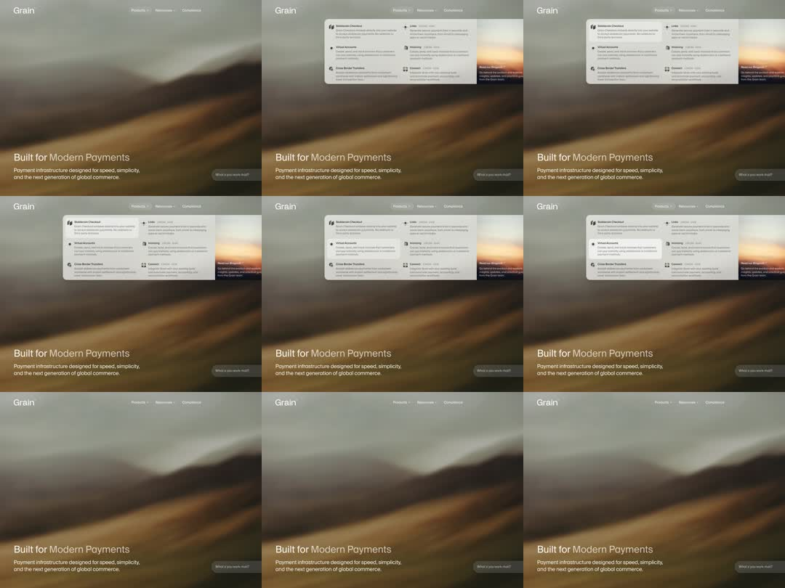

Fintech marketing site ('Grain') nav with a mega menu: hovering Products drops a wide panel with a 2-column feature link list and a sunset image card, over a blurred golden-hour hero; panel opens with fade+settle and closes cleanly.

Build a mega-menu nav. Bar: wordmark left, 3 items with carets, transparent over a blurred hero image. On hover/focus of Products (with 150ms open intent delay, 300ms close grace so diagonal pointer moves don't flicker): panel renders full content-width below the bar - translucent white card, blur backdrop, radius 16, border black/5, shadow-xl. Enter: opacity 0->1 + translateY -8px->0 over 250ms ease-out; caret rotates 180deg. Interior: 3-column grid - col 1: three feature links (32px icon tile, bold title, 2-line description), col 2: three plain links with arrow icons, col 3: 4:3 image card with caption. Row hover: bg black/4, 8px radius, 120ms. Exit: 180ms ease-in fade + -4px lift. Keyboard: focus opens, Esc closes, focus returns to trigger. Mobile: accordion instead.